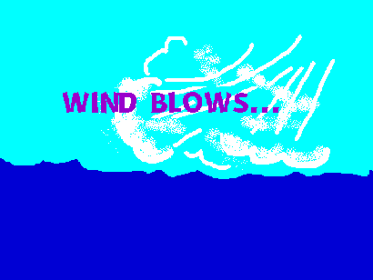

Waves can be seen everywhere, just not with the naked eye. The only time we can see the true shape of a wave is through motion, the most natural being through observing the ocean. Ocean waves are caused by wind moving across the surface of the water. The friction (the resistance that one surface or object encounters when moving over another) between the air and water transfers energy from the air to the water. When waves get bigger and bigger, it’s because the smaller waves in the ocean converge together to become larger. Earthquakes can push water hard to cause big waves like tsunamis. An ocean current is a continuous flow of water into the ocean. Essentially, it’s like a faucet that you leave running. Currents, similar to waves, can be caused by wind. At the same time, they can also be caused by temperature andd salinity (saltiness) differences, gravity, and natural events such as earthquakes. Essentially what happens is that the moon and the sun pulls up the ocean with their gravity. The effects of the sun and the moon on the tides are different because of how far away each of them are from the Earth. Because the tide is determined by the period of the earth’s cycles of rotation, the tide also undergoes daily cycles. There are also multiple types of tides. Depending on your location, the tide could affect the ocean by a great amount.


 of The Ocean
of The Ocean